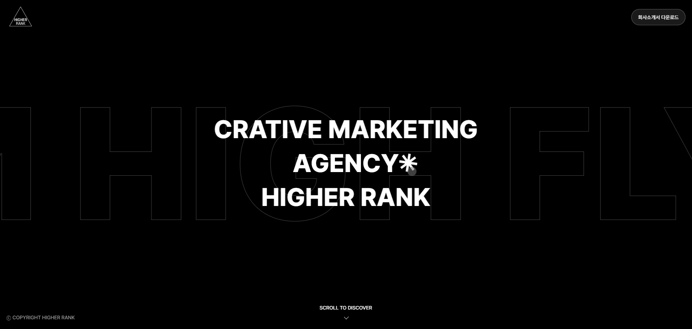

WORK DETAIl
하이어랭크
JavaScript / 반응형
담당역할
디자인 · 퍼블리싱
기여도
100%
기업을 소개하기 위한 원페이지 웹사이트입니다.
기획부터 제작까지 원스톱으로 가능한 기업의 특성을 살려 각 브랜드 별 모달창을 통해
사용자는 기업에 대한 웹사이트의 내용을 한 눈에 탐색 할 수 있습니다.
원페이지 인터랙션을 통해 각 메뉴로 쉽고 빠르게 접근할 수 있도록 구성하였습니다.
대표님과 기획 단계부터 함께 논의하며 보다 적합한 UI를 제공할 수 있도록 했습니다.
반응형 UI와 섹션별 인터렉션을 제안해 결과물의 완성도를 더욱 높인 프로젝트였습니다.
Visit Site
Visit Site

운영 & 유지보수를 위한 Code Component 규격화 진행
공통적으로 사용되는 부분을 대량양산 할 수 있도록 컴포넌트 공통화에 집중하여 퍼블리싱 진행했습니다.